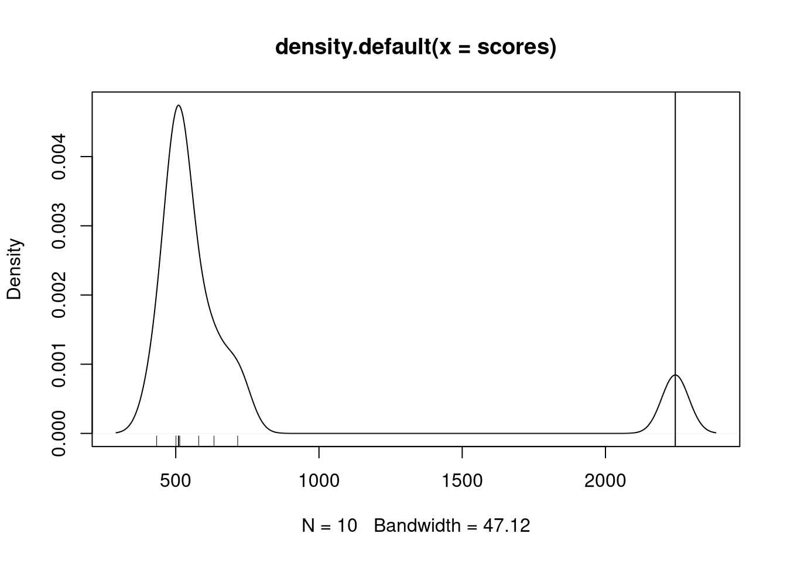

Chapter 6 Enrichment analyses
Motivation: at the end of this chapter, the students will be able to address the following points:
- What are the next steps after a differential expression analysis?
- Why are enrichment analyses useful?
- Understanding over-enrichment analyses.
- Understanding a gene set enrichment analysis.
- Application of the clusterProfiler package.
6.1 Introduction
Differential expression analysis is univariate - each gene is tested on its own. This probably doesn’t reflect the underlying biology - genes work in conjunction, not in isolation. One wouldn’t expect that the effect of a drug, or a mutation, … would lead to the perturbation of a single gene expression.
The univariate approach expects (or tests for) significant changes in single genes. Moderate effects in many (related) genes cannot, by definition be identified as statistically significant, even it such an effect may be biologically more plausible that one of a few large ones.
The goal of an enrichment analysis is to test for a group of related genes, called gene sets, and test whether the genes within these sets are enriched for differentially expression.
6.2 Gene sets
While nothing would stop a user to create their own gene sets, the sets that are generally used stem from community-maintained resources.
6.2.1 Gene Ontology (GO)
The Gene Ontology (Ashburner et al. 2000Ashburner, M, C A Ball, J A Blake, D Botstein, H Butler, J M Cherry, A P Davis, et al. 2000. “Gene Ontology: Tool for the Unification of Biology. The Gene Ontology Consortium.” Nat Genet 25 (1): 25–29. https://doi.org/10.1038/75556.) defines GO terms. These terms are based on a controlled vocabulary (to resuse the same words in a consistent way) and relations11 Example of relations between terms are, for example, is_a (mitosis is_a cell cycle phase) or part_of (mitosis part_of M phase of mitotic cell cycle). that define the links between terms.
These terms are classed into three categories, called namespaces:
- Molecular Function (MF): molecular activities of gene products
- Cellular Component (CC): where gene products are active
- Biological Process (BP): pathways and larger processes made up of the activities of multiple gene products
Here’s an example of GO term GO:0007155, that describes cell adhesion.
A Term from the GO ontology: GO:0007155
Label: cell adhesion
The attachment of a cell, either to another cell or to an underlying
substrate such as the extracellular matrix, via cell adhesion
molecules.If you look at the GO term GO:0007155 entry on the Gene Ontology
page, you can
find more details and, if you scroll down, example genes that are
annotated with that term.
Figure 6.1: Gene ontology entry for the GO term for cell adhesion.

The whole Gene Ontology is can be accessed in R with the GO.db package.
In the code chunk below, we query the GO.db package through the
org.Hs.eg.db interface. This org.db for Homo sapiens enables to
perform various queries for human genes, such as retrieving all gene
symbols and ENTREZ identifiers (the columns below) that are
annotated with a GO term (the keys below) of interest.
The GO term of interest here is focal adhesion:
A cell-substrate junction that anchors the cell to the extracellular
matrix and that forms a point of termination of actin filaments. In
insects focal adhesion has also been referred to as hemi-adherens
junction (HAJ).library("GO.db")
library("org.Hs.eg.db")
GO_0005925 <- select(org.Hs.eg.db,
keys = "GO:0005925",
columns = c("ENTREZID", "SYMBOL"),
keytype = "GO") %>%
as_tibble %>%
filter(!duplicated(ENTREZID))## 'select()' returned 1:many mapping between keys and columns## # A tibble: 405 x 5
## GO EVIDENCE ONTOLOGY ENTREZID SYMBOL
## <chr> <chr> <chr> <chr> <chr>
## 1 GO:0005925 HDA CC 60 ACTB
## 2 GO:0005925 HDA CC 70 ACTC1
## 3 GO:0005925 ISS CC 71 ACTG1
## 4 GO:0005925 HDA CC 81 ACTN4
## 5 GO:0005925 HDA CC 87 ACTN1
## 6 GO:0005925 IMP CC 88 ACTN2
## 7 GO:0005925 IMP CC 89 ACTN3
## 8 GO:0005925 HDA CC 102 ADAM10
## 9 GO:0005925 HDA CC 118 ADD1
## 10 GO:0005925 HDA CC 214 ALCAM
## # … with 395 more rowsWe have 405 genes matching this GO term. There are thus 405 genes in the GO_0005925 GO set.
► Question
Repeat the code above to extract the genes annotated with the
GO:0005813 term for the centrosome:
A structure comprised of a core structure (in most organisms, a pair
of centrioles) and peripheral material from which a
microtubule-based structure, such as a spindle apparatus, is
organized. Centrosomes occur close to the nucleus during interphase
in many eukaryotic cells, though in animal cells it changes
continually during the cell-division cycle.
► Solution
6.2.2 Kyoto Encyclopedia of Genes and Genomes (KEGG)
KEGG pathway is a collection of manually drawn and curated pathway maps representing current knowledge of the molecular interaction, reaction and relation networks.
The figure below shows the pathways for the cell cycle in humans.
Figure 6.2: KEGG pathway for cell cycle.

The KEGGREST package provides a client interface to the KEGG server.
6.2.3 Reactome
Alike KEGG patway, Reactome is a free, open-source, curated and peer-reviewed pathway database. The Bioconductor reactome.db package provides access to reactome maps and annotations within R.
6.2.4 Molecular Signatures Database (MySigDB)
MSigDB is a collection of annotated gene sets for use with GSEA software. The MSigDB gene sets are divided into 9 collections:
- Hallmark gene sets (H) are coherently expressed signatures derived by aggregating many MSigDB gene sets to represent well-defined biological states or processes.
- Positional gene sets (C1) for each human chromosome and cytogenetic band.
- Curated gene sets (C2) from online pathway databases, publications in PubMed, and knowledge of domain experts.
- Regulatory target gene sets (C3) based on gene target predictions for microRNA seed sequences and predicted transcription factor binding sites.
- Computational gene sets (C4) defined by mining large collections of cancer-oriented microarray data.
- Ontology gene sets (C5) consist of genes annotated by the same ontology term.
- Oncogenic signature gene (C6) sets defined directly from microarray gene expression data from cancer gene perturbations.
- Immunologic signature gene sets (C7) defined directly from microarray gene expression data from immunologic studies.
- Cell type signature gene sets (C8) curated from cluster markers identified in single-cell sequencing studies of human tissue.
6.3 Statistical analyses
To illustrate enrichment analyses, we will use the DESeq2 results
stored in the the res_tbl variable, computed in the previous
chapter.
We will focus on the genes that have an adjusted p-value (those that have been tested) and that have unique ENTREZ gene identifiers.
res_tbl <- res_tbl %>%
filter(!is.na(ENTREZID),
!is.na(padj),
!duplicated(res_tbl$ENTREZID))
res_tbl$ENTREZID <- as.character(res_tbl$ENTREZID)
res_tbl## # A tibble: 13,719 x 9
## ENSEMBL baseMean log2FoldChange lfcSE stat pvalue padj gene
## <chr> <dbl> <dbl> <dbl> <dbl> <dbl> <dbl> <chr>
## 1 ENSG00… 1209. -4.67 0.178 -26.2 8.24e-152 1.37e-147 PGRM…
## 2 ENSG00… 277. 6.25 0.351 17.8 6.25e- 71 5.20e- 67 ZBED2
## 3 ENSG00… 630. 2.24 0.154 14.6 3.32e- 48 1.84e- 44 NUDT…
## 4 ENSG00… 220. 4.29 0.300 14.3 2.20e- 46 9.16e- 43 CST6
## 5 ENSG00… 2692. 2.05 0.144 14.2 5.64e- 46 1.88e- 42 YWHAH
## 6 ENSG00… 381. 2.33 0.171 13.6 3.45e- 42 9.55e- 39 THG1L
## 7 ENSG00… 506. 2.53 0.191 13.2 8.45e- 40 2.01e- 36 EMP2
## 8 ENSG00… 193. 3.44 0.271 12.7 7.18e- 37 1.49e- 33 STEA…
## 9 ENSG00… 1419. 3.00 0.240 12.5 6.39e- 36 1.18e- 32 ST3G…
## 10 ENSG00… 6134. 2.18 0.178 12.2 2.26e- 34 3.76e- 31 ITGB8
## # … with 13,709 more rows, and 1 more variable: ENTREZID <chr>6.3.1 Over-enrichment analysis (ORA)
To perform an over-enrichment analysis, we need to define:
- among all the genes, which ones are differentially expressed (DE);
- among all the genes, which ones are part of the gene set of interest.
And fill out the following table and count the number of DE genes that are in the set of interest, the non-DE that are in the set, and the DE and non-DE genes that are not in the set:
## DE and GO
n <- length(intersect(res_tbl$ENTREZID[res_tbl$padj < 0.05],
GO_0005925$ENTREZID))
## !DE and GO
m <- length(intersect(res_tbl$ENTREZID[res_tbl$padj >= 0.05],
GO_0005925$ENTREZID))
## DE and !GO
p <- length(setdiff(res_tbl$ENTREZID[res_tbl$padj < 0.05],
GO_0005925$ENTREZID))
## !DE not !GO
q <- length(setdiff(res_tbl$ENTREZID[res_tbl$padj >= 0.05],
GO_0005925$ENTREZID))cont_mat <- matrix(c(n, m, p, q), nrow = 2)
rownames(cont_mat) <- c("DE", "!DE")
colnames(cont_mat) <- c("GO", "!GO")
cont_mat## GO !GO
## DE 158 4026
## !DE 201 9334We can now apply a Fisher’s exact (or hypergeometric test) that will test whether we can identify a statistically enrichment of DE genes in the GO category.
##
## Fisher's Exact Test for Count Data
##
## data: cont_mat
## p-value = 5.285e-08
## alternative hypothesis: true odds ratio is not equal to 1
## 95 percent confidence interval:
## 1.465125 2.263592
## sample estimates:
## odds ratio
## 1.822262► Question
Repeat the analysis above the the GO:0005813 term.
This approach is straightfoward and very fast. Its major drawback however is that we need to define a cutoff to differentiate DE from non-DE genes. Setting this threshold might have a effect on the results.
► Question
Try setting different DE genes and check if, in the cases above, this has and effect on the GO terms of interest.
6.3.2 Gene set enrichment analysis (GSEA)
Gene set enrichment analysis refers to a broad family of tests. Here, we will define the principles based on (Subramanian et al. 2005Subramanian, A, P Tamayo, V K Mootha, S Mukherjee, B L Ebert, M A Gillette, A Paulovich, et al. 2005. “Gene Set Enrichment Analysis: A Knowledge-Based Approach for Interpreting Genome-Wide Expression Profiles.” Proc Natl Acad Sci U S A 102 (43): 15545–50. https://doi.org/10.1073/pnas.0506580102.), keeping in mind that the exact implementation will differ in different tools.
The major advantage of GSEA approaches is that they don’t rely on
defining DE genes. The first step is to order the genes of
interest based on the statistics used, typically the p-values. This is
already the case for our res_tbl table. We also need to know which
genes are in our set of interest.
res_tbl$inGO <- res_tbl$ENTREZID %in% GO_0005925$ENTREZID
dplyr::select(res_tbl, ENTREZID, padj, inGO)## # A tibble: 13,719 x 3
## ENTREZID padj inGO
## <chr> <dbl> <lgl>
## 1 10857 1.37e-147 FALSE
## 2 79413 5.20e- 67 FALSE
## 3 55270 1.84e- 44 FALSE
## 4 1474 9.16e- 43 FALSE
## 5 7533 1.88e- 42 FALSE
## 6 54974 9.55e- 39 FALSE
## 7 2013 2.01e- 36 FALSE
## 8 55240 1.49e- 33 FALSE
## 9 6482 1.18e- 32 FALSE
## 10 3696 3.76e- 31 TRUE
## # … with 13,709 more rowsWe are now going to compute a score by traversing to ordered gene list
and count a positive score when we encounter a gene in the gene set,
and a -1 when the gene is not in the gene set. The positive score,
called set_ratio below, is computeted as as \(\frac{n_{genes} - n_{genes~in~set}}{n_{genes~in~set}}\) so that the sum of all genes in
the set and those not in the set becomes zero.
The cumulative sum of these scores along the ordered gene list becomes the GSEA path which is plotted below, and the maximun score obtained along this path is the GSEA score.
set_ratio <- (nrow(res_tbl) - sum(res_tbl$inGO))/sum(res_tbl$inGO)
gsea_path <- ifelse(res_tbl$inGO, set_ratio, -1)
gsea_path <- cumsum(gsea_path)
gsea_score <- max(gsea_path)
plot(gsea_path, type = "l",
xlab = "Ordered genes (padj)",
ylab = "score",
main = paste0("GSEA score: ", round(gsea_score)))
abline(h = gsea_score, col = "steelblue", lty = "dotted")Figure 6.3: Gene set enrichment analysis path for term GO:0005925.

To be able to compute a statistical significance, we need to compute a null distribution of GSEA scores, i.e. a distribution of scores reflecting the absence of any enrichment. This would typically be obtained by permuting the samples in the original data, repeating the statistical analysis, reorder the genes accodring to the new statistics (we used the adjusted p-value above) and compute a new GSEA score. This would be repeated a certain number of times.
This is very time consuming the statistical tests for all the genes need to be recomputer. In addition, for experiments with limited number of samples, the number of permutations would be limited.
Below, we are simply going to generate 100 random permutations of the gene list to simulate the procedure above and calculate the GSEA score.
set.seed(123)
gsea_null <- replicate(100, {
res_tmp <- res_tbl
res_tmp$padj <- sample(res_tmp$padj)
res_tmp <- arrange(res_tmp, padj)
tmp_path <- ifelse(res_tmp$inGO, set_ratio, -1)
tmp_path <- cumsum(tmp_path)
max(tmp_path)
})
hist(gsea_null)
The best score we could get would correspond to a permutation starting with all the 359 genes in the set:
## [1] 13360while the worst score, where all the 359 genes are at the end of the gene list would be zero.
All the possibilities mentioned above are shown on the plots below.

Figure 6.4: Representation of all GSEA paths: real path (blue), best and worse possible paths (red) and random paths (dotted grey).
An empirical p-value can be computer by dividing the number of null scores that are greater than the real score divided by the number of permutations (the number of null scores). In our case, given that no null scores are greater, the nominal p-value would be 0.
► Question
Given that we have 100 permutations, how many null scores greater that the actual GSEA score do we need for our results to become non significant (assuming we set an alpha of 0.05)?
► Solution
6.4 Using the clusterProfiler package
Page built: 2020-10-03